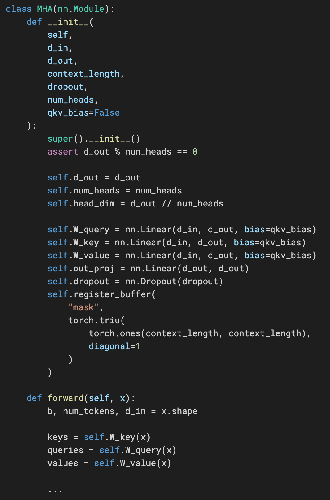
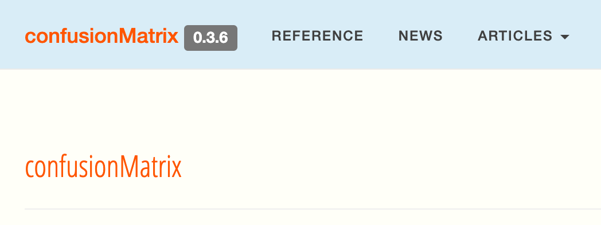
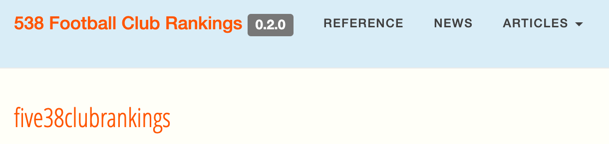
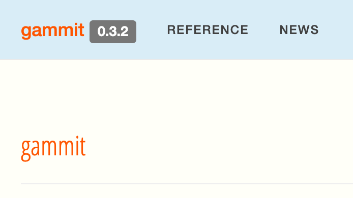
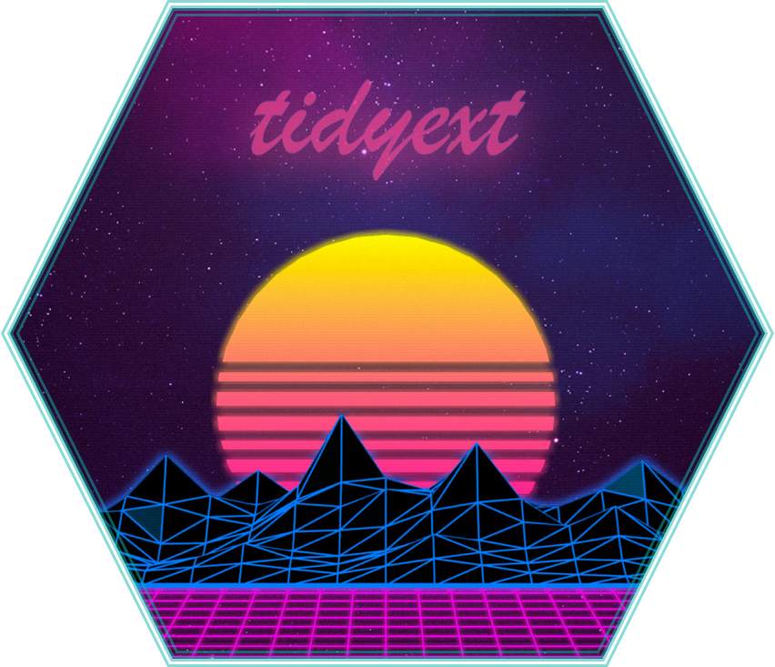
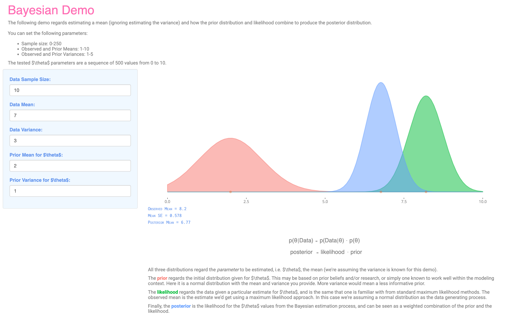

Code

A lot of the following are things I have done in the past for fun or personal interest and development. For my latest efforts, check me out on GitHub, but note that almost all of my work nowadays is for clients and internal use that is not publicly available. Also, while most of this page regards R, I actually have been doing more in Python lately.
R Packages
I haven’t had time to do much with these anymore, but they are available on GitHub and still mostly functional.
mixedup
A package for extracting results from mixed models from several packages that are easy to use and viable for presentation.

confusionMatrix
Given predictions and a target variable, this package provides a wealth of summary statistics that can be calculated from a single confusion matrix, and returns tidy results with as few dependencies as possible.

198R
R with its collar flipped, or the movie Drive if it was all about R programming, writing R code on a beach in Miami as the sun sets, R wearing sunglasses at night, R asking you to take it home tonight because it doesn’t want to let you go until you see the light, Countach > Testarrosa, but Delorean > all except R, R if Automan had lasted longer than 1 season, driving down Mulholl Dr. at night thinking about R code, R playing a cello at the end of a dock on a lake before taking a ride in a badass helicopter, R with its hair all done up with Aquanet… You get the idea.
visibly
This is a collection of functions that I use related to visualization, e.g. the palette generating function (create_palette) and clean visualization themes for ggplot and plotly. In addition, there are visualizations specific to mixed and additive models.

538 football club rankings
This package grabs the table located at 538, and additionally does some summary by league and country.

gammit
The package provides a set of functions to aid using mgcv (possibly solely) for mixed models. Mostly superseded by mixedup.

tidyext
This package is a collection of functions that do the things I commonly need to do with data while doing other processing within the dataverse. Most of the functionality is now standard in tidyverse, so this is essentially deprecated.

lazerhawk
While the name is more or less explanatory, to clarify, this is a package of miscellaneous functions that were mostly useful to me. Now deprecated.
In addition to these, though they are not publicly available, I’ve created even more involved packages for specific project work.
Code Snippets
The vast majority of these code snippets are conceptual demonstrations of more complicated models. The audience was generally faculty, researchers, and graduate students in applied fields who, like I did, want to go beyond their basic statistical training. However, I hope it helps anyone who happens to stumble across it. I don’t really update this page anymore, as I’ve cleaned and moved much of these over to Model Estimation by Example, so I would look for something you see here in the corresponding chapter of that document. In general, you can find all of my code at GitHub.
Model Fitting
standard linear regression, standard logistic regression, penalized regression, lasso regression, ridge regression, newton and IRLS, nelder-mead (Python) (R), gradient descent (stochastic), bivariate probit, heckman selection, tobit, naive bayes, multinomial regression, ordinal regression, quantile regression, hurdle poisson, hurdle negbin, zero-inflated poisson, zero-inflated negbin, Cox survival, confirmatory factor analysis, Markov model, hidden Markov model (R) (Python), stochastic volatility, extreme learning machine, Chinese restaurant process, Indian buffet process, One-line models (an exercise), …
Mixed models
one factor random effects (R) (Julia) (Matlab), two factor random effects (R) (Julia) (Matlab), mixed model via ML, mixed model, mixed model with correlated random effects, See the documents section for more…
Bayesian
BEST t-test, linear regression (Compare with BUGS version, JAGS), mixed model, mixed model with correlated random effects, beta regression, mixed model with beta response (Stan) (JAGS), mixture model, topic model, multinomial models, multilevel mediation, variational bayes regression, gaussian process, horseshoe prior, item response theory, …
EM
EM mixture univariate, EM mixture multivariate, EM probit, EM pca, EM probabilistic pca, EM state space model
Wiggly
Gaussian processses
Gaussian Process noisy, Gaussian Process noise-free, reproducing kernel hilbert space regression, Bayesian Gaussian process, …
Additive models
cubic spline, …
Programming Shenanigans
This is old stuff I was doing while learning programming languages. Fun at the time, but mostly useless.
FizzBuzz test (R) (julia) (Python), Reverse a string recursively (R) (Python), Recursive Word Wrap (R) (Python), calculate compound interest recursively, get US Congress roll call data, Scrape xkcd (R) (Python), Shakespearean Insulter, spurious correlation with ratios, R matrix speedups, …
Shiny Apps
Fun at the time, these were some my forays into the Shiny world.
Bayesian Demonstration
A simple interactive demonstration for those just starting on their Bayesian journey.

Historical Football Data
That was a dive into Shiny from long ago to make app to explore historical football/soccer data for various European leagues (Premier, La Liga, Serie A etc.) and MLS. One can create tables for a given country/league and year selected, with some leagues having multiple tiers available, and stretching back many decades. Beyond that, one can get a specific team’s historical finishing position, league games for a specific season, all-time tables, and all-time head-to-head results (within a league).
Last Statements of the Texas Executed
A demonstration of both text analysis and literate programming/document generation with a dynamic and interactive research document. The texts regard the last statements of offenders in Texas. Sadly no longer functional, as the shiny environment at shinyapps.io appears to not have been preserved correctly on their servers. For its time, it was actually a very nifty demonstration of latent dirichlet allocation and structured topic modeling.
A History of Tornados
Because I had too much time on my hands and wanted to try out the dashboard feature of R Markdown. Maps tornado activity from 1950-2015. (Archived)